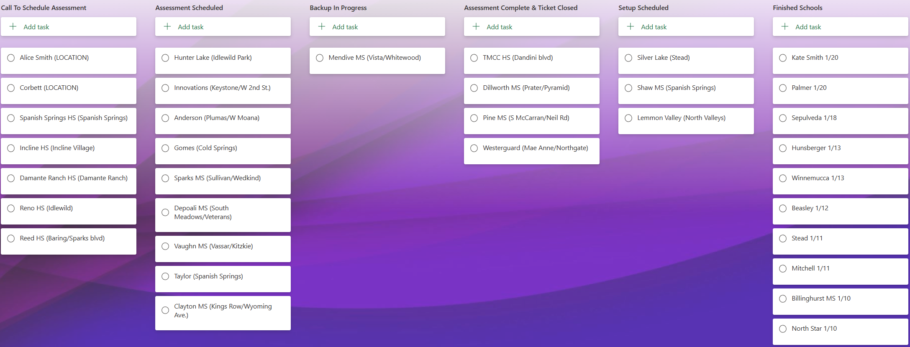
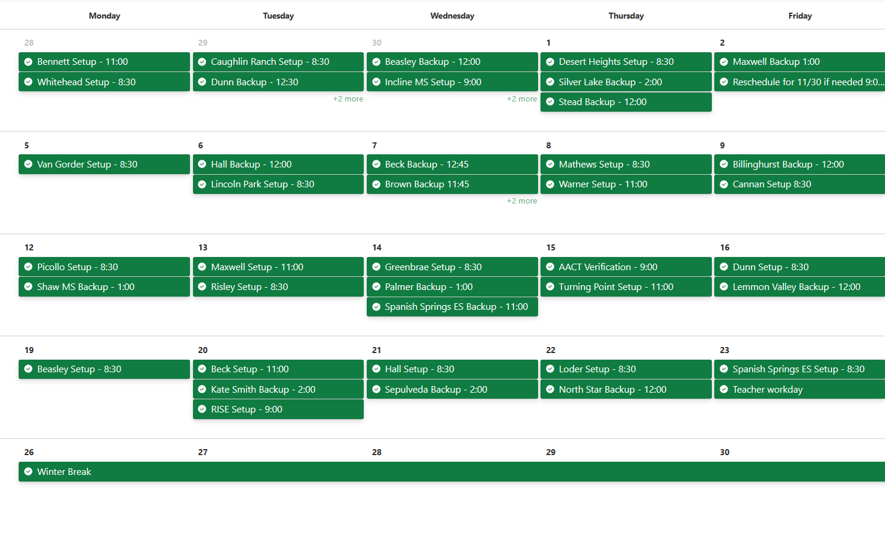

Teacher Laptop Refresh Project Fall 22 – Spring 23
With several schools running devices that were 10-12 years old, desktops with 80 GB mechanical hard drives and laptops that were barely holding on, the Washoe County School District was able to secure funding to do a district-wide refresh on educator’s computing devices.
Working with our department’s project manager, and our User Services Coordinator, I played a key role in leading the deployment and progression of this technology refresh project. From helping draft documentation, scheduling, managing a team attached to the project and leading the role-out on sites, I played a key role in the successful completion of the project.
Documentation for Refresh Project and New Schools
Prior to work being started on the refresh project, I was tasked with creating documentation for the schools that were opened over the summer of 2022 – Hug High School, O’Brien Middle School and the renovated Swope Middle School.
This documentation that was shared with staff at those sites was on how to back up their files using OneDrive and ensuring Known Folder Move was enabled as well as documentation on how to connect a laptop to a docking station. All three schools’ staff members were provided with a laptop, docking station, monitor and peripherals so this documentation was helpful in ensuring that staff were able to set up their devices and get going with minimal headaches.
This documentation was reused for the refresh project as teachers at schools would be receiving a new laptop and docking station.
The Project
Prior to refreshing the devices at our first site, our project manager reached out to our pilot school, Florence Drake Elementary School, and communicated what would be achieved with the project as well as verified the classified staff members at the site. In addition, the school was informed that the refresh would be a 1:1 swap to remove old computers that needed to be replaced. After eligible staff were verified, the next step was to follow up with every teacher eligible for a refresh laptop and verify that they backed up their device that was being replaced as well as take inventory on if the school would need to purchase any adapters or cables to ensure their new computers would work with existing classroom technology. This information was then relayed to the school and once we verified that all staff had backed up their device, and necessary adapters/cables were ordered we scheduled a date for us to set up the new laptop and remove the old e-waste computer. The setup for the pilot school was completed by the site’s regular IT person and me. We documented all the issues and concerns that we came across to help us with the schools that would be refreshed afterwards. In addition to this, I informed the school as well as our property control tech that we finished setting up the refresh laptops and the old devices were ready to be removed from the school. With that email, that essentially wrapped up our work at the school.
With what we learned from our pilot school, this would help create guidelines and a general process that would be followed at the remaining schools in the school district. The general process is as follows.
- The IT Project Manager would contact a batch of schools informing them that the teacher device refresh is here and instructed the schools to provide pertinent information for the schools to have the project proceed.
- The school would return the information that was requested. This information was then verified by our project manager.
- I would then reach out to the school and schedule a time for my team and I to go in and assist staff with backing up their devices and inventorying if the school would need to provide any cables or adapters.
- Once all staff members had their device back up verified, the devices were then shipped to the school.
- Once I received confirmation that the devices were sent out, I would reach out to the school to schedule a day for my team and myself to go in and assist staff with setting up their new computer and remove the old computer from the room.
- Once all teachers have been helped and the old device was removed from the classroom, I contacted the school informing them that we have finished helping all teachers in setting up their device. This close out email was also used by our department’s property control tech to remove the old devices from the school.
On my end, the project’s progress and scheduling was tracked using our departments ticketing system as well as a Microsoft Planner Plan. Initially, the Plan was intended for my team and myself to keep track of what we had scheduled but the Plan was then used by other members of the project to keep track of how the project was progressing.
Above was a screenshot of the cards I used to keep track of where schools were along in the project and below is a screenshot of the calendar I used to keep track of our schedule.
Challenges and Thoughts
Throughout the project, there were a couple of challenges and hiccups that came up along the progression of the project. Below are a few challenges I ran into throughout the project.
Although the process from start to finish was very hands-on and time consuming, we felt it would be necessary to support our users from helping them backup their computers to setting up their new computers. For the project, we wanted to ensure that the transition to a new device was as smooth as possible for teachers at schools, especially with the swap occurring during the school year and during instruction time.
Scheduling on occasions would be a bit of a challenge. I would work with schools in ensuring that we worked around any events they had going on while trying to ensure that our schedule remained productive. With over 80 schools in the school district receiving new devices, I would reach out to them in scheduling our initial visit as well as scheduling a day for us to go in and set up their new devices.
Another scheduling challenge that I would come across was managing the project’s schedule with the availability of my team. My team consisted of professional interns that were only able to work part time and had varying schedules. Some of these interns would also go on to move on to different roles within the department (yay!) or move onto different endeavors.
Initially, we started off by only scheduling one school setup per day as the process would take my team and I five to seven hours to complete based on the size of the school. Towards the end of October, we changed this to working on two school setups per day depending on the size of the school. With this change, we also brought onboard the rest of the User Services team to assist with setting up the new teacher devices. School techs would be informed of the date and times we would be onsite to set up the new computers and would be required to assist with their school’s setup.
Although this project was very hands on and demanding, it was worthwhile and rewarding knowing the work we accomplished greatly improved teachers’ work experience and allowed them to teach more efficiently using the technology in their room. Several teachers would make comments along the lines that their old computer would take 30 minutes to even log in making it difficult to teach using the tech in their room. Ultimately, teachers and even students were grateful for the quality and attention to detail of our work.